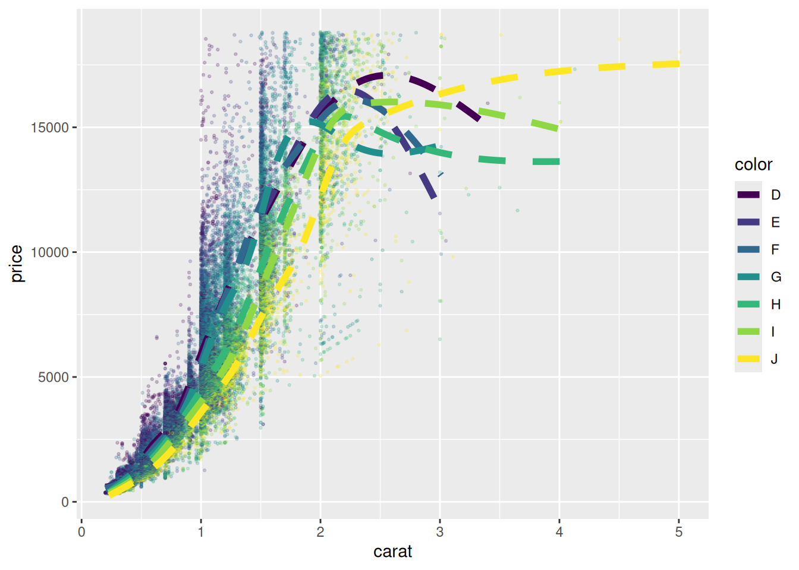
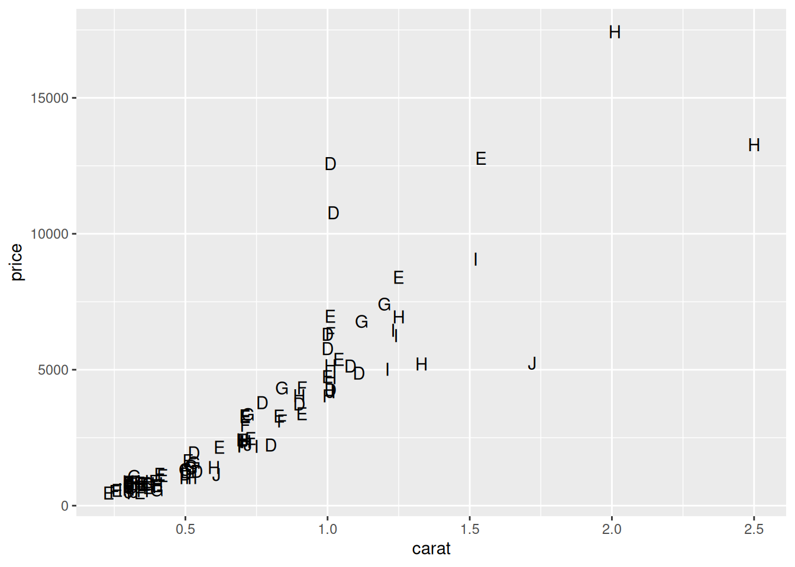
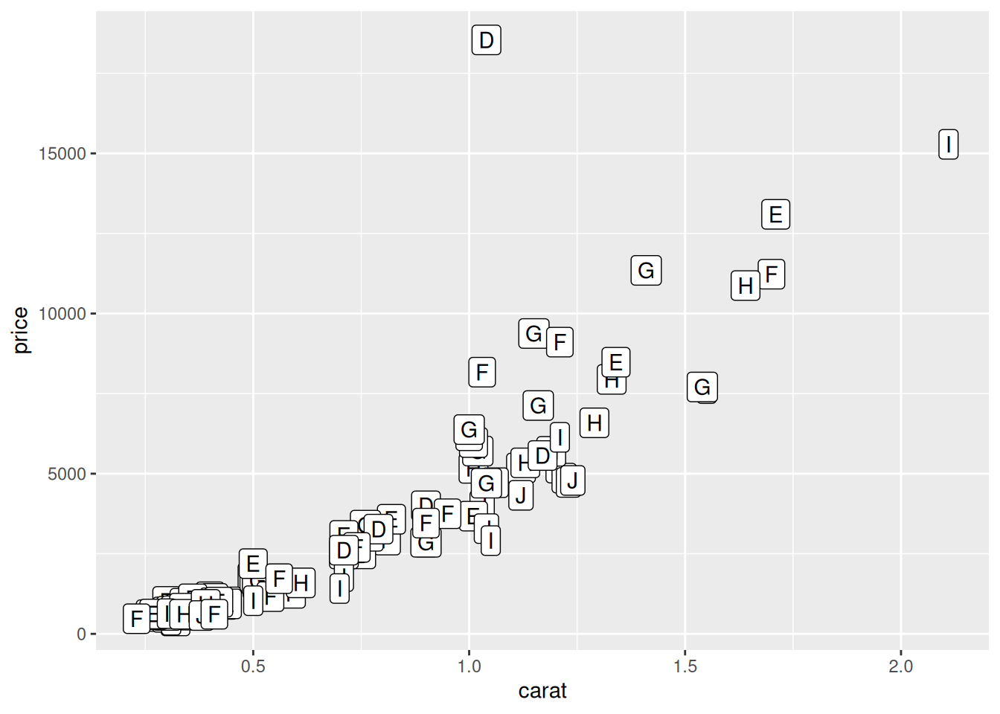
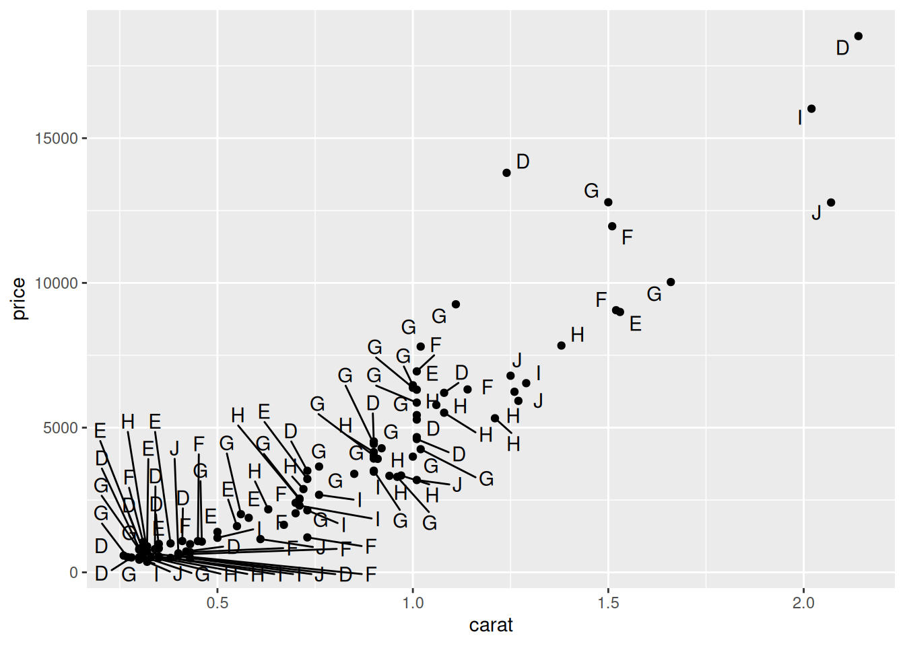
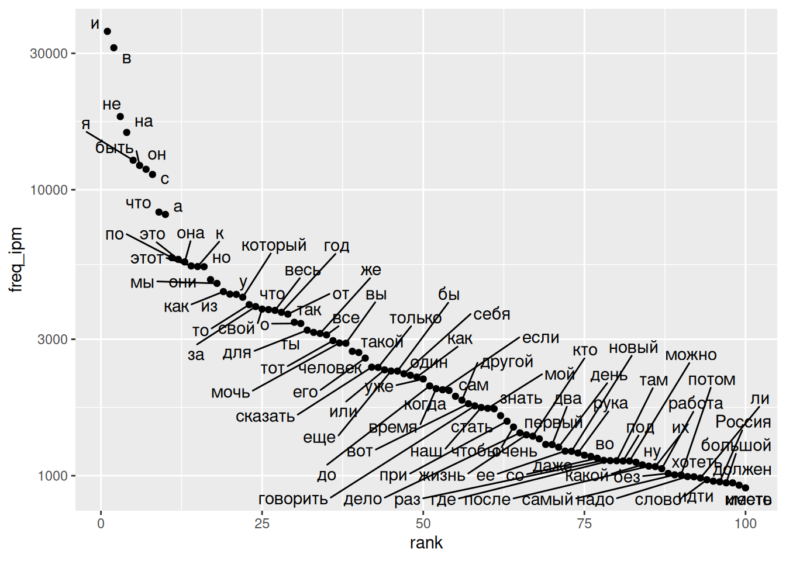
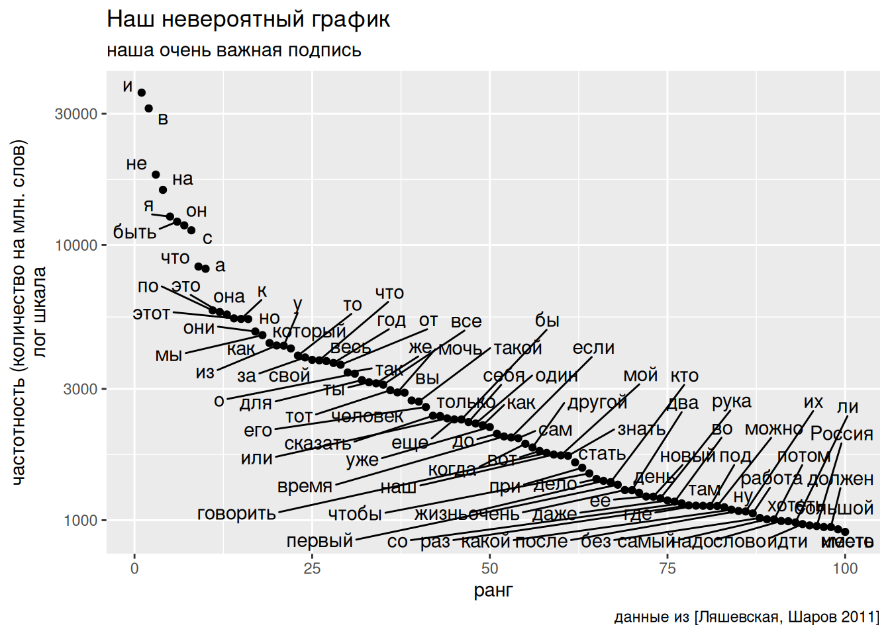
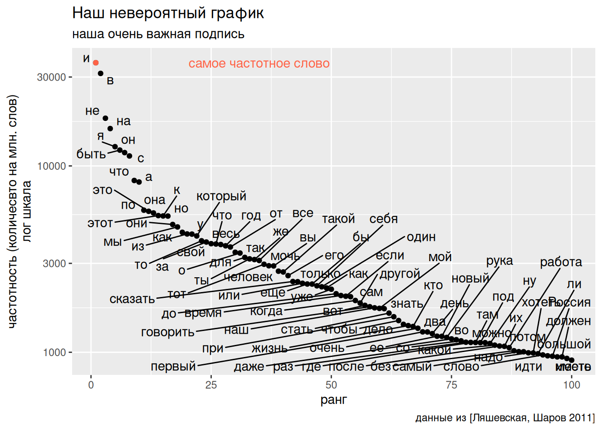
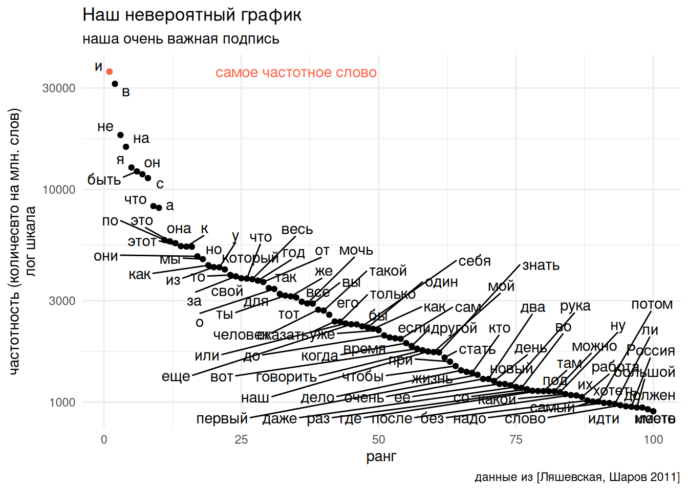
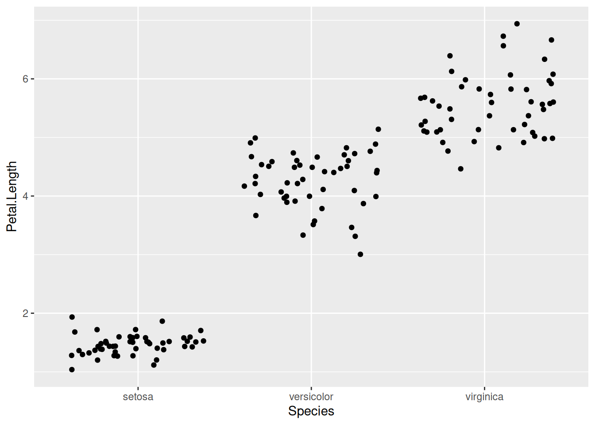
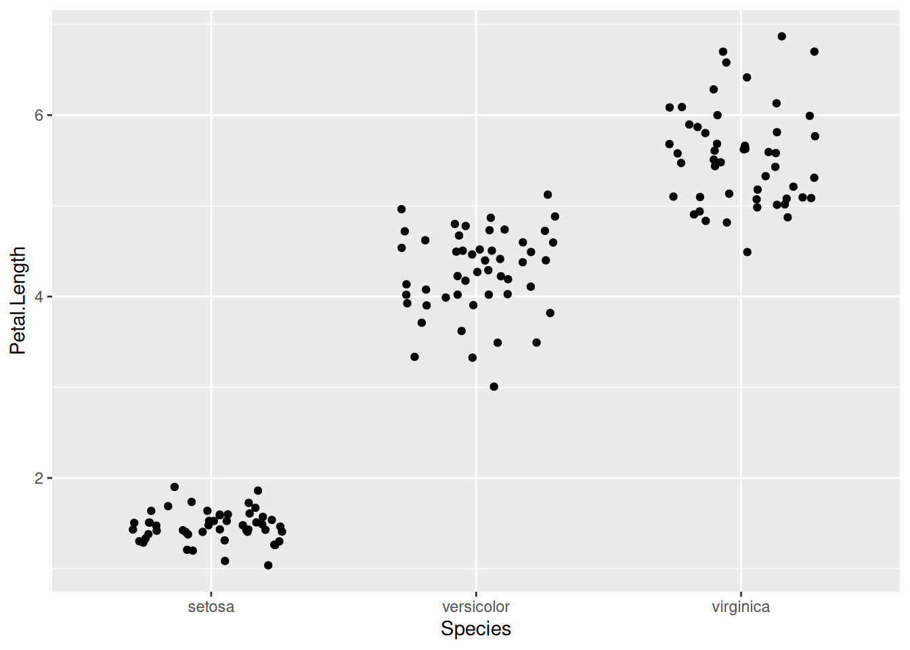

library(tidyverse)3 Визуализация данных
3.1 Зачем визуализировать данные?
Визуализация помогает окинуть собранные данные взглядом, найти ошибки ввода данных и может быть сформулировать первые инсайты. Данный раздел посвящен введения в пакет ggplot2, однако по этому пакету есть масса более подробных материалов: главы 9–11 книги (Wickham, Çetinkaya-Rundel, and Grolemund 2023) и целая книга (Wickham 2016), обе доступные онлайн. В сжатом виде информация про ggplot2 содержиться здесь.Кроме того для этого пакета написали много расширений, у каждого своя страница с инструкцией.
3.1.1 Квартет Анскомба
В работе (Anscombe 1973) представлен следующий датасет:
anscombe <- read_csv("https://raw.githubusercontent.com/agricolamz/daR4hs/main/data/w3_anscombe.csv", show_col_types = FALSE)Если смотреть исключительно на описательные статиски датасета, то покажется, что перед нами 4 одинаковых датасета:
anscombe |>
group_by(dataset) |>
summarise(mean_x = mean(x),
mean_y = mean(y),
sd_x = sd(x),
sd_y = sd(y),
cor_coeff = cor(x, y)) |>
round(2)Однако, если мы визуализируем данные, то окажется, что перед нами совсем разные данные:
3.1.2 Датазаурус
В работе (Matejka and Fitzmaurice 2017) предложили 13 датасетов, обладающих похожим свойством:
datasaurus <- read_csv("https://raw.githubusercontent.com/agricolamz/daR4hs/main/data/w3_datasaurus.csv")
datasaurus |>
group_by(dataset) |>
summarise(mean_X = mean(x),
mean_Y = mean(y),
sd_X = sd(x),
sd_Y = sd(y),
cor = cor(x, y),
n_obs = n()) |>
select(-dataset) |>
round(1)3.2 Первый график рассеяния
Для построения первого графика рассеяния достаточно ввести следующую команду:
datasaurus |>
ggplot(aes(x, y)) +
geom_point()
В разных пособиях можно увидеть другую запись, когда данные подаются в качестве первого аргумента:
ggplot(datasaurus, aes(x, y)) +
geom_point()Однако я буду использовать первый вариант, который мне кажется удобнее тем, что автозаполнение в таком случае предлагает название переменных. Стоит обратить внимание, что разные части при построении графиков соединяются знаком +, а не конвеером. Это связано с тем, что пакет разрабатывался и стал популярным, до того, как стала популярна вся инфраструктура tidyverse и конвееров. Поменяем цвет точек, для этого в функции geom_point() добавим аргумент color (или colour):
datasaurus |>
ggplot(aes(x = x, y = y)) +
geom_point(color = "darkgreen")
Важно понимать, что первая строчка с функцией aes() содержит инструкции как нужно использовать при отображении переменные из датасета, а аргументы в отдельных geom_ говорят, как какое-то свойство изменить для всех точек.
datasaurus |>
ggplot(aes(x = x, y = y, color = dataset)) +
geom_point()Вторая строчка с функцией geom_point() сообщает, как мы хотим отобразить те данные, которые были перечислены в функции aes(). Функций семейства geom_...() очень много, далее мы посмотрим самые популярные функции и их аргументы.
3.3 Слои в ggplot2
Элементы графика в ggplot2 устроены по слоям, так что каждый элемент geom_...() подается поверх предыдущего. Рассмотрим на примере встроенного в ggplot2 датасета diamonds, содержащего информацию про цену и другие свойства почти 54 тысяч бриллиантов:
diamonds |>
ggplot(aes(carat, price)) + # названия аргументов можно пропускать
geom_point() +
geom_smooth()
В нашем коде мы используем две функции из семейства geom_...(): geom_point() рисует точки, а geom_smooth() рисует линию, которая описывает тренд в данных. Первыми на график наносятся точки, а потом сверху линия. Мы можем поменять местами элементы и тогда результат будет нарисован по-другому:
diamonds |>
ggplot(aes(carat, price)) +
geom_smooth() +
geom_point()3.4 Некоторые аргументы функций geom_...() и aes()
Перечислим некоторые полезные аргументы функции geom_...() и aes():
color— цвет обводки (строка с цветом)fill— цвет закрашивания (строка с цветом)size— размер (число)shape— иконки (число)alpha— прозрачность (число между 0 и 1)linewidth— ширина линии (число)linetype— тип линии (обычный, пунктир и т. п. задаются целыми числами)label— текст для функцийgeom_...(), которые отображают аннотации
diamonds |>
ggplot(aes(carat, price, color = color)) +
geom_point(alpha = 0.2, size = 0.5) +
geom_smooth(linewidth = 2, se = FALSE, linetype = 2)
Важно отметить, что все слои (т. е. функции geom_...()) оперируют единицами, определенными в функции aes(), поэтому geom_smooth() рисует не одну линию, как было раньше, а 7, так как переменная из таблицы color упомянута в первой функции aes(). Чтобы исправить это поведение, в каждой функции geom_...() можно вставить свою функцию aes(). Вот как выглядит код, если мы хотим нарисовать лишь одну линию тренда: цвет задается внутри geom_point() и поэтому не “проникает” в geom_smooth().
diamonds |>
ggplot(aes(carat, price)) +
geom_point(aes(color = color), alpha = 0.2, size = 0.5) +
geom_smooth(linewidth = 2, se = FALSE, linetype = 2)Основной принцип ggplot2 предполагал, что данные визуализируются на основе таблицы, однако у каждой функции geom_...() также есть аргумент data, который можно использовать, если хочется нанести на график что-то на основе другой таблицы.
# создаем еще одну таблицу
new_table <- tibble(carat = 1:3,
price= 1:3*5000)
diamonds |>
ggplot(aes(carat, price)) +
geom_point(aes(color = color), alpha = 0.2, size = 0.5) +
geom_smooth(linewidth = 2, se = FALSE, linetype = 2) +
geom_point(data = new_table, color = "red", shape = 17, size = 4)На графике красными треугольниками представлены данные из другой таблицы new_table.
3.5 Аргумент label
Может показаться важным отображать разные текстовые элементы на графике. Например, цвет бриллиантов кодируется буквой:
diamonds |>
slice_sample(n = 100) |>
ggplot(aes(carat, price, label = color)) +
geom_text()
diamonds |>
slice_sample(n = 100) |>
ggplot(aes(carat, price, label = color)) +
geom_label()
Для того, чтобы наложения отображались можно использовать пакет geom_text_repel() или geom_label_repel() из пакета ggrepel:
library(ggrepel)
diamonds |>
slice_sample(n = 100) |>
ggplot(aes(carat, price, label = color)) +
geom_point() +
geom_text_repel()Warning: ggrepel: 49 unlabeled data points (too many overlaps). Consider
increasing max.overlaps
Если все равно остается много наложений, можно увеличить параметр max.overlaps:
diamonds |>
slice_sample(n = 100) |>
ggplot(aes(carat, price, label = color)) +
geom_point() +
geom_text_repel(max.overlaps = 50)
Этот график далек от идеала, но хорошо показывает разные средства для отображения строковых категорий на графике.
3.6 Финализация графика: функции labs(), annotate()
Графики, которые мы пока построили были достаточно сыроваты, в связи с этим, следует обсудить еще несколько функций, которые позволяют доофрмить график. Рассмотрим для примера данные из частотного словаря русского языка (Ляшевская and Шаров 2011):
freq_dict <- read_tsv("https://raw.githubusercontent.com/agricolamz/daR4hs/main/data/w3_freq_dict_2011.csv")
freq_dict |>
arrange(desc(freq_ipm)) |>
mutate(rank = 1:n()) |>
ggplot(aes(rank, freq_ipm))+
geom_point()Мы видим, что мы ничего не можем увидеть, потому что частотность слов, отложенная по оси y имеет слишком большой разброс. В таких случаях имеет смысл отлогарифмировать переменную, детали которой хочется показать.
freq_dict |>
arrange(desc(freq_ipm)) |>
mutate(rank = 1:n()) |>
ggplot(aes(rank, freq_ipm)) +
geom_point() +
scale_y_log10()Важно отметить, что данные никак не поменялись. Изменился шаг шкалы y: 1-10-100-1000 и т. д. Аналогично для трансформации осей есть функции scale_x_log10(), scale_y_sqrt() и scale_x_sqrt(). Отфильтруем первые 150 слов и добавим слова, частотность которых показана:
freq_dict |>
arrange(desc(freq_ipm)) |>
mutate(rank = 1:n()) |>
slice(1:100) |>
ggplot(aes(rank, freq_ipm, label = lemma)) +
geom_point() +
geom_text_repel(max.overlaps = 150)+
scale_y_log10()
Попробуем закончить оформление графика при помощи функции labs(). В этой функции можно изменить названия осей, добавить заголовок, подзаголовок и подпись:
freq_dict |>
arrange(desc(freq_ipm)) |>
mutate(rank = 1:n()) |>
slice(1:100) |>
ggplot(aes(rank, freq_ipm, label = lemma)) +
geom_point() +
geom_text_repel(max.overlaps = 150)+
scale_y_log10()+
labs(x = "ранг",
y = "частотность (количесвто на млн. слов)\nлог шкала",
title = "Наш невероятный график",
subtitle = "наша очень важная подпись",
caption = "данные из [Ляшевская, Шаров 2011]")
Иногда бывает, что на графике нужно нарисовать несколько объектов не связанных с датасетом. В таком случае используется функция annotate(), которая содержит аргумент geom (в него следует писать продолжения из семейства функций geom_...()), а дальше требует перечисления аргументов, которые мы обычно перечисляем в функции aes():
freq_dict |>
arrange(desc(freq_ipm)) |>
mutate(rank = 1:n()) |>
slice(1:100) |>
ggplot(aes(rank, freq_ipm, label = lemma)) +
geom_point() +
geom_text_repel(max.overlaps = 150)+
scale_y_log10()+
labs(x = "ранг",
y = "частотность (количесвто на млн. слов)\nлог шкала",
title = "Наш невероятный график",
subtitle = "наша очень важная подпись",
caption = "данные из [Ляшевская, Шаров 2011]")+
annotate(geom = "point", x = 1, y = 35802, color = "tomato")+
annotate(geom = "text", x = 35, y = 35802, color = "tomato",
label = "самое частотное слово")
Кроме того ggplot2 содержит в себе множество тем, которые можно использовать, просто добавив последней строчкой какую-то из функций семейства theme_...(). Я считаю, что важно знать про несколько тем:
theme_minimal()theme_voide()
freq_dict |>
arrange(desc(freq_ipm)) |>
mutate(rank = 1:n()) |>
slice(1:100) |>
ggplot(aes(rank, freq_ipm, label = lemma)) +
geom_point() +
geom_text_repel(max.overlaps = 150)+
scale_y_log10()+
labs(x = "ранг",
y = "частотность (количесвто на млн. слов)\nлог шкала",
title = "Наш невероятный график",
subtitle = "наша очень важная подпись",
caption = "данные из [Ляшевская, Шаров 2011]")+
annotate(geom = "point", x = 1, y = 35802, color = "tomato")+
annotate(geom = "text", x = 35, y = 35802, color = "tomato",
label = "самое частотное слово")+
theme_minimal()
3.7 Сохранение результата
Сохранить получившийся график можно двумя способами. Можно сохранить график просто нажав во вкладке Plots на клавишу Export > Save as image. Можно нажать на клавишу Zoom и в открывшемся окне ткнуть правой кнопкой мыши и выбрать из вариантов Copy image/Save image as. Кроме того, можно сохранить график при помощи кода. Это часто удобно, при автоматизации генерации картинок, например, для научной статьи. Графики ggplot2 можно сохранять функцией ggsave(), где нужно специфицировать аргументы filename, width/height или dpi, bg (фон, от слова background).
ggsave("my_plot.png", bg = "white", width = 12, height = 9)3.8 Столбчатые диаграммы и факторы
Если в предыдущем разделе мы визуализировали связь двух числовых переменных, то в этом разделе мы попробуем визуализировать связь числовой и категориальной переменной. Для этого мы воспользуемся датасетом из статьи издания The Pudding “The Gyllenhaal Experiment”:
misspellings <- read_csv("https://raw.githubusercontent.com/agricolamz/daR4hs/main/data/w3_misspelling_dataset.csv")
misspellings |>
distinct(correct)misspellings |>
filter(correct != spelling) |>
count(correct) |>
ggplot(aes(n, correct))+
geom_col()+
labs(y = NULL,
y = "number of misspellings",
caption = "based on The Pudding data")Как видно из кода, я использовал функцию geom_col() для отображения результата в виде столбчатой диаграммы. К сожалению, мы видим, что категории отсортировались по алфавиту и никакая сортировка таблицы до передачи в функцию ggplot() ситуации не исправит. Для того, чтобы иметь более осмысленную сортировку нужно изменить переменную correct и преобразовать ее в особый тип данных в R — в фактор. Фактор хранит данные в виде индексов, а каждому индексу приписывает правильное поведение при печати. Рассмотрим на примере:
factor(c("собаки", "кошки", "мышки", "кошки", "мышки"))[1] собаки кошки мышки кошки мышки
Levels: кошки мышки собакиМы видим при печати не только значения вектора (обратите внимание на отсутствие ковычек — значит R не воспринимает эту переменную как строковую), но и дополнительную подпись Levels, которая сообщает порядок значений переменных (по умолчанию он алфавитный). Мы можем изменить порядок категорий, тогда на графике будет сохраняться тот порядок, который был задан пользователем:
tibble(my_var = factor(c("собаки", "кошки", "мышки", "кошки", "мышки"),
levels = c("собаки", "кошки", "мышки"))) |>
count(my_var) |>
ggplot(aes(my_var, n))+
geom_col()Важно, что в tidyverse пакет forcats, который позволяет создавать факторы на основе значений в переменных. Например, если мы хотим, чтобы столбчатая диаграмма имела сортировку по значению n, то мы можем поменять при помощи функции fct_reorder(). В качестве первого аргумента функции подается переменную, которую надо преобразовать, а в качестве второго — переменую при помощи которой нужно сортрировать.
misspellings |>
filter(correct != spelling) |>
count(correct) |>
mutate(correct = fct_reorder(correct, n)) |>
ggplot(aes(n, correct))+
geom_col()+
labs(y = NULL,
y = "number of misspellings",
caption = "based on The Pudding data")
Отметим другие полезные функции из пакета for_cats:
fct_inorder()— упорядочить согласно порядку, в котором значения появляются в датасете;fct_infreq()— упорядочить согласно частотности, с которой значения появляются в датасете;fct_anon()— заменяет уровни фактора произвольными целыми числами. Это полезно для анонимизации данных.
Чтобы сделать наш график опечаток еще красивее можно добавить geom_text(), чтобы видеть значения колонок.
misspellings |>
filter(correct != spelling) |>
count(correct) |>
mutate(correct = fct_reorder(correct, n)) |>
ggplot(aes(n, correct, label = n))+
geom_col()+
geom_text(nudge_x = 230)+
xlim(0, 3200)+
labs(y = NULL,
y = "number of misspellings",
caption = "based on The Pudding data")
Стоит так же обратить внимание, что столбики имеют ободок и внутренность, и если мы хотим закрасить столбики, нужно использовать аргумент fill, а не color:
misspellings |>
filter(correct != spelling) |>
count(correct) |>
mutate(correct = fct_reorder(correct, n)) |>
ggplot(aes(n, correct, label = n))+
geom_col(color = "darkgreen")+
geom_text(nudge_x = 230)+
xlim(0, 3200)+
labs(y = NULL,
y = "number of misspellings",
caption = "based on The Pudding data")misspellings |>
filter(correct != spelling) |>
count(correct) |>
mutate(correct = fct_reorder(correct, n)) |>
ggplot(aes(n, correct, label = n))+
geom_col(fill = "darkgreen")+
geom_text(nudge_x = 230)+
xlim(0, 3200)+
labs(y = NULL,
y = "number of misspellings",
caption = "based on The Pudding data")Также в разных источниках можно встретить geom_bar(), который преобразует в столбчатую диаграмму неаггрегированный вектор значений:
misspellings |>
filter(correct != spelling) |>
ggplot(aes(correct))+
geom_bar()+
coord_flip()
Все это происходит на основании длинного неагрегированного вектора с повторениями:
misspellings |>
filter(correct != spelling) |>
select(correct) |>
slice_sample(n = 200)Тут-то нам и пригодится функция fct_infreq():
misspellings |>
filter(correct != spelling) |>
mutate(correct = fct_infreq(correct)) |>
ggplot(aes(correct))+
geom_bar()+
coord_flip()3.9 Визуализируем распределение: функции geom_dotplot(), geom_histogram(), geom_density(), пакет ggridges
Иногда для случаев, когда мы исследуем числовую переменную подходит простой график, который отображает распределение наших наблюдений на одной соответствующей числовой шкале. Мы рассмотрим это на примере известного датасета iris Рональда Фишера (Fisher 1936):
iris |>
ggplot(aes(Sepal.Length, fill = Species)) +
geom_dotplot() +
theme(legend.position = "bottom")По оси x отложена наша переменная, каждая точка — одно наблюдение, а отложенное по оси y стоит игнорировать – оно появляется из-за ограничений пакета ggplot2.
iris |>
ggplot(aes(Sepal.Length, fill = Species)) +
geom_dotplot() +
theme(legend.position = "bottom") +
scale_y_continuous(NULL, breaks = NULL) # чтобы убрать ось yЕсли наблюдений слишком много, дотплот не имеем смысла применять:
diamonds |>
ggplot(aes(price)) +
geom_dotplot(method = "histodot")+
scale_y_continuous(NULL, breaks = NULL) # чтобы убрать ось yВместо него обычно строят гистограмму.
diamonds |>
ggplot(aes(price)) +
geom_histogram()Обсудим на предыдущем примере
iris |>
ggplot(aes(Sepal.Length)) +
geom_histogram()
По оси x отложена наша переменная, а высота столбца говорит, сколько наблюдений имеют такое же наблюдение. Однако многое зависит от того, что мы считаем одинаковым значением. Алгоритм здесь основан на разбиении распределения на n интервалов одинакового размера и отображением, сколько наблюдений попало в интервал. Количество интервалов можно задать самостоятельно, используя аргумент bins:
iris |>
ggplot(aes(Sepal.Length)) +
geom_histogram(bins = 50)iris |>
ggplot(aes(Sepal.Length)) +
geom_histogram(bins = 5)Существует три алгоритма определения оптимального количества интервалов, встроенных в R, которые можно использовать и снимать с себя ответственность:
- (Sturges 1926)
nclass.Sturges(mtcars$mpg) - (Scott 1979)
nclass.scott(mtcars$mpg) - (Freedman and Diaconis 1981)
nclass.FD(mtcars$mpg)
iris |>
ggplot(aes(Sepal.Length)) +
geom_histogram(bins = nclass.FD(iris$Sepal.Length))В этом типе графика точно так же можно раскрашивать на основании другой переменной:
iris |>
ggplot(aes(Petal.Length, fill = Species)) +
geom_histogram()Кроме того, существует способ использовать не такой рубленный график, а его сглаженную вариант, который строиться при помои функции оценки ядерной плотности. Важное свойство, которое стоит понимать про функцию плотности — что кривая, получаемая ядерной оценкой плотности, не зависит от величины коробки гистоделения (хотя есть аргумент adjust, который отвечает за степень “близости” функции плотности к гистограмме).
iris |>
ggplot(aes(Petal.Length)) +
geom_density()Таким образом мы можем сравнивать распределения:
iris |>
ggplot(aes(Petal.Length, fill = Species)) +
geom_density()Часто имеет смысл настроить прозрачность:
iris |>
ggplot(aes(Petal.Length, fill = Species)) +
geom_density(alpha = 0.6)Кроме того, иногда удобно разделять группы на разные уровни при помощи функции geom_density_ridges() из пакета ggridges (можно установить командой install.packages("ggridges")):
library(ggridges)
iris |>
ggplot(aes(Petal.Length, Species, fill = Species)) +
geom_density_ridges(alpha = 0.6)3.10 Распределение по категориям: функции geom_jitter(), geom_boxplot(), geom_violin() пакет ggbeeswarm
Распределение можно визуализировать и при помощи знакомого нам geom_point():
iris |>
ggplot(aes(Species, Petal.Length))+
geom_point()К сожалению, в таком варианте точки накладываются друг на друга, в связи с этим можно использовать geom_jitter(), который произвольно разносит точки вокруг некоторой оси:
iris |>
ggplot(aes(Species, Petal.Length))+
geom_jitter()
Если разрброс слишком большой, его можно уменьшить при помощи аргумента width:
iris |>
ggplot(aes(Species, Petal.Length))+
geom_jitter(width = 0.3)
Кроме того, существует функция geom_beeswarm() из пакета ggbeeswarm (не забудьте установить его командой install.packages("ggbeeswarm")). Эта функция делает что-то вроде двумерного geom_dotplot вокруг оси:
library("ggbeeswarm")
iris |>
ggplot(aes(Species, Petal.Length))+
geom_beeswarm()Сглаженный вариант geom_beeswarm() — двумерная функция плотности — называют графиком-скрипкой. Этот тип графика можно создать при помощи функции geom_violin().
iris |>
ggplot(aes(Species, Petal.Length))+
geom_violin()Фунция автоматически обрезает концы, это можно отключить при помощи аргумента trim:
iris |>
ggplot(aes(Species, Petal.Length))+
geom_violin(trim = FALSE)
Последний график из этой категории, который мы разберем, называется ящик с усами (boxplot), который часто используют для визуализации распределения:
iris |>
ggplot(aes(Species, Petal.Length))+
geom_boxplot()
Верхние и нижние края коробки отвечают 25-процентной и 75-процентной квантилям. Расстояние между 25-процентной и 75-процентной квантилями измеряется для каждой коробке и 1.5 межквартильных расстояния откладывается вверх и вниз от коробки и потом уменьшается до минимального (в случае нижнего уса) и максимального (в случае верхнего уса) значений. Наблюдения, которые не попали в интервал 1.5 межквартильных расстояния объявляется на таком графике выбросом и отмечается отдельной точкой.
3.11 Фасетезация: семейство функций facet_...()
Достаточно мощным инструментом анализа данных является фасетизация, которая позволяет разбивать графики на основе какой-то переменной.
diamonds |>
ggplot(aes(carat, price, color = clarity))+
geom_point(size = 0.3)+
facet_wrap(~color, scales = "free")При этом иногда так бывает, что наличие какой-то одного значение в одном из фасетов, заставляет иметь одну и ту же шкалу для всех остальных. Это можно изменить при помощи аргумента scales:
diamonds |>
ggplot(aes(carat, price, color = clarity))+
geom_point(size = 0.3)+
facet_wrap(~color, scales = "free_x")Иногда имеет смысл показать данные на фоне всего датасета. Для этого можно использовать трюк: использовать еще один слой с точками, куда вставить датасет без группирующей переменной (в нашем случае это color).
diamonds |>
ggplot(aes(carat, price, color = clarity))+
geom_point(data = diamonds |> select(-color),
size = 0.3, color = "grey90")+
geom_point(size = 0.3)+
facet_wrap(~color, scales = "free_x")+
theme_minimal()Кроме того, можно добавлять дополнительные аргументы фасетизации:
diamonds |>
ggplot(aes(carat, price))+
geom_point(size = 0.3)+
facet_wrap(~cut+color)А еще можно создавать сетки переменных, используя функцию facet_grid(), они по сравнению с facet_wrap() занимают меньше места:
diamonds |>
ggplot(aes(carat, price))+
geom_point(size = 0.3)+
facet_grid(cut~color, scales = "free")
Кроме того facet_grid() позволяет делать обощающие поля, где представлены все данные по какой-то строчке или столбцу:
diamonds |>
ggplot(aes(carat, price))+
geom_point(size = 0.3)+
facet_grid(cut~color, scales = "free", margins = TRUE)Warning: Combining variables of class <ordered> and <factor> was deprecated in ggplot2
3.4.0.
ℹ Please ensure your variables are compatible before plotting (location:
`reshape_add_margins()`)Warning: Combining variables of class <factor> and <ordered> was deprecated in ggplot2
3.4.0.
ℹ Please ensure your variables are compatible before plotting (location:
`reshape_add_margins()`)